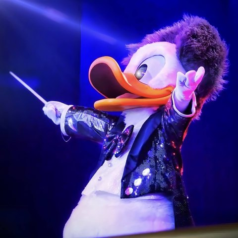

THE EDITOR / ABOUT
好きの、その先まで。
てる
ディズニーの楽しみ方を知ること。パークに隠れた物語を見つけること。そんな発見を、読みやすい記事にして届けています。
Instagram@teru_luce_
DISNEY, THROUGH MY EYESA SMALL INTRODUCTION
ディズニーの「気になる」を、
ひとつずつ。
初めて行く日のための情報も、何度も訪れた場所の新しい発見も。難しい言葉だけで終わらせず、背景や理由まで伝わる記事を目指しています。
01 / DISCOVER
まずは気軽に
Disney Discovery
パークの楽しみ方、知っておきたい用語、キャラクターや作品の豆知識を、わかりやすく紹介します。
サイトを見る 02 / GO DEEPER 背景にある物語へBGS Chronicles
パークの建築、バックストーリー、歴史や演出をたどり、景色の奥にある物語を掘り下げます。
サイトを見るEDITORIAL NOTES
記事づくりで大切にすること
01
わかりやすく、正確に
専門用語に頼りすぎず、必要な情報は信頼できる情報源を確認して伝えます。
02
事実と解釈を分ける
確認できる情報と、個人の見方や考察が混ざらないように整理します。
03
読み終わったあとに発見を
情報を並べるだけでなく、「そういうことだったのか」と思える入口をつくります。
「てる」は運営上のハンドルネームです。Disney DiscoveryおよびBGS Chroniclesは、ディズニー公式とは独立したファン向けメディアです。